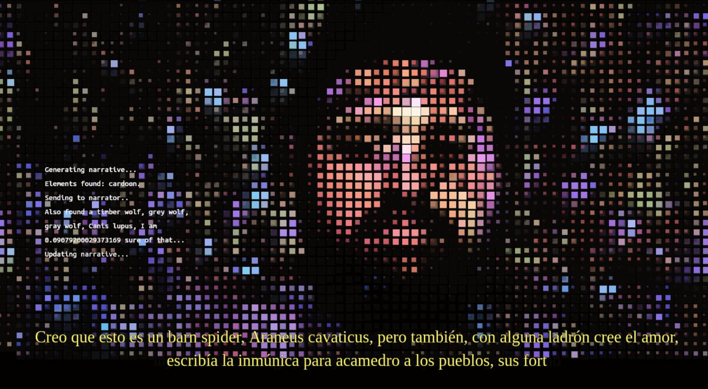
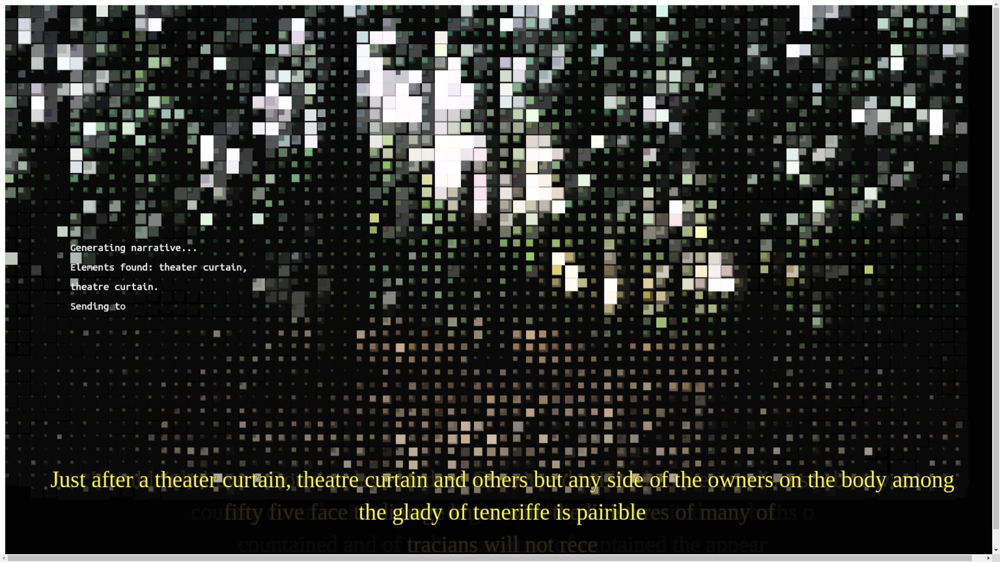
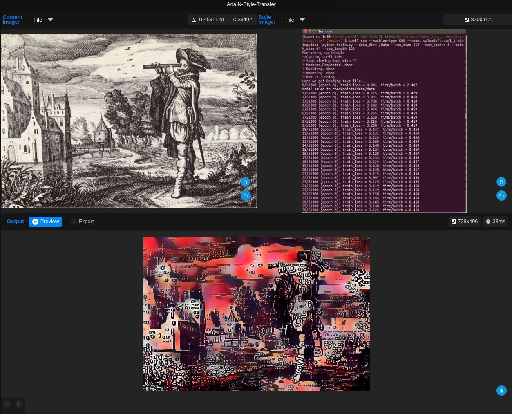

Learning to write: a machine learning experiment

Learning to write: a machine learning experiment is a textual artificial organism that performs a reading and writing exercise using video input from around the globe and a generative language model trained on 19th-century travel literature. The work focus on the notion of travel, journey, discovery, and cognition.
Machine Learning / Experimental Literature / Installation
Machine Learning, convolutional neural network, mobile vision, long short-term memory (LSTM), projection, XIX century travel literature corpus, travel videos.
Experimenting with narrative.
The work arises from a need to organize a series of chaotic experiences while traveling to more than 39 countries and 1,532 flight hours with a social robot.
To make sense of the speed and heterogeneity of these episodes, I've designed a writing system that articulates two structures: a convolutional neural network using mobile vision and a long short-term memory (LSTM) architecture of recurrent neural network (RNN).

Writing with Neural Networks
A convolutional neural network using mobile vision interprets a set of audiovisual micro-narratives that represent personal waiting times or moments in which I feel present.
Then, the objects and situations recognized by the machine are sent to a long short-term memory (LSTM) recurrent neural network (RNN) that has been trained on 19th-century travel literature, the NNR model then narrates what is happening -or what it thinks is happening- in the image.
The work is also an experiment around an endless writing action that tries to understand a world constituted by limited objects and perceptions, perhaps a reflection of our own cognitive operations.

Exhibitions
- Game On! The Art in Videogames. Centro Cultural San Martín, Buenos Aires.
- Mixed Feelings. School of Machines, ACUD MACHT NEU, Berlin.